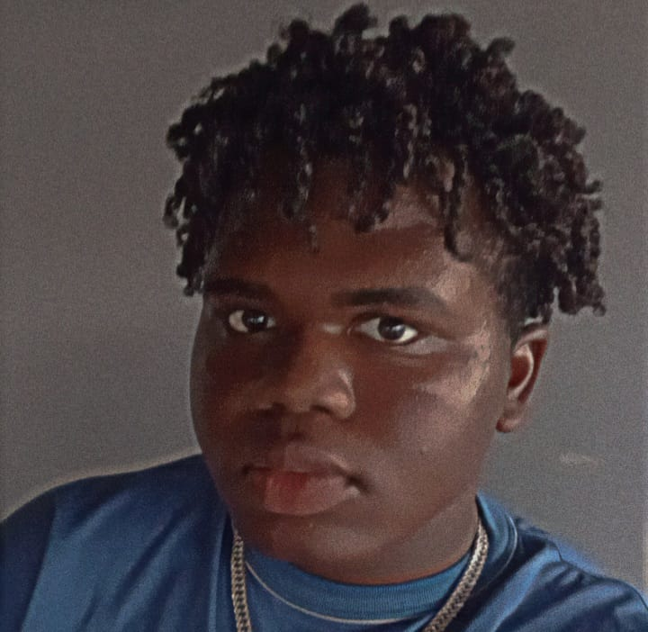

Over Mij
Geboortedatum: 05/09/2004
Leeftijd: 19
Telefoonnummer: +597 7142601
Email: sygourneynelis@gmail.com
Biografie: Ik ben Nelis Sygourney Rodney, een ervaren ontwikkelaar met passie voor technologie en innovatie. Met een achtergrond in verschillende programmeertalen en frameworks, streef ik ernaar om unieke en efficiënte oplossingen te creëren.
Mijn Streven: Mijn streven is om een succesvol carrière te hebben in de softwareontwikkeling, door voortdurend mijn vaardigheden te verbeteren en innovatieve oplossingen te bieden die de wereld kunnen veranderen.